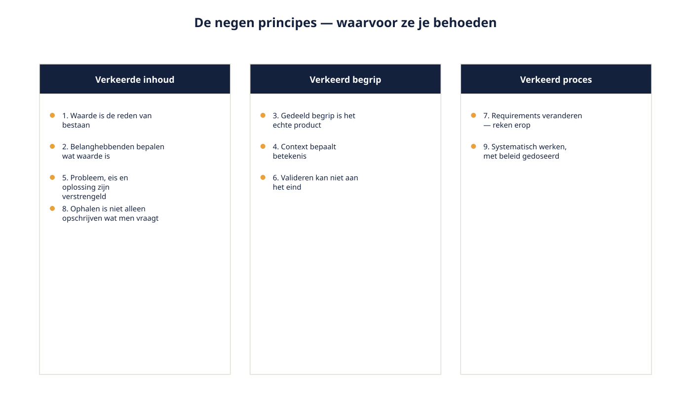
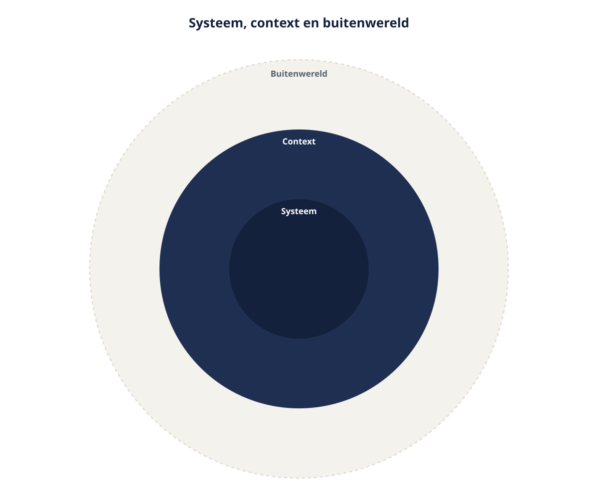

Cursus Requirements engineering · Niveau 1 (CPRE Foundation Level) · Deel 2 van 30
Fundamentele principes, systeemgrens en context.
Techniek verandert, principes zijn taaier. Dit deel geeft u de negen fundamentele principes van requirements engineering in Ductus-taal, en het eerste concrete gereedschap om ze toe te passen: de systeemgrens en het contextdiagram. Daarmee sluit u bevinding R1 — de scope die tijdens WGP 2.0 met 41% groeide, zonder dat ooit iemand een grens kon aanwijzen.
9secties
±2uleestijd + werkboek
6controlevragen
R1bevinding gesloten
Positionering. Deze cursus is een voorbereiding op de CPRE Foundation Level-certificering van IREB en is uitdrukkelijk geen vervanging van het officiële syllabus- en examenmateriaal van IREB, te raadplegen via ireb.org. Alle formuleringen, figuren en werkvormen in dit materiaal zijn van Ductus; studeer voor het examen altijd óók de bron.
Niveau 1: ➊ Wat RE is → ➋ Principes, systeemgrens en context (hier) → ➌ Belanghebbenden en bronnen → ➍ Elicitatie: basistechnieken → ➎ Requirementssoorten en werkproducten → ➏ Formuleringssjabloon → ➐ Modelgebaseerd → ➑ Kwaliteitseisen → ➒ Beheerbasis → ➓ Examentraining + capstone
01
Waar dit deel over gaat
⏱ 10 min
Deel 1 gaf u het begrippenkader: wat een requirement is, en waarom WGP 2.0 daarop strandde. Dit deel geeft u het fundament eronder: negen principes die niet afhankelijk zijn van tooling of notatie, en het eerste concrete gereedschap dat u op het Nabestaandenloket toepast.
Aan het eind van dit deel kunt u:
de negen fundamentele principes van requirements engineering in eigen woorden uitleggen en toepassen op een casus;
het onderscheid maken tussen systeem, systeemgrens, context en contextgrens;
een contextdiagram opstellen voor een afgebakend systeem;
beoordelen of iets binnen of buiten de systeemgrens valt, en de grijze gevallen expliciet maken;
uitleggen hoe een ontbrekende systeemgrens tot ongecontroleerde scopegroei leidt.
Dit deel sluit bevinding R1 uit de post-mortem van WGP 2.0.
02
Waarom principes vóór technieken
⏱ 8 min
Technieken veranderen. Interviewvormen, notaties, tooling: wat vandaag standaard is, is over tien jaar een voetnoot. Principes zijn taaier. Ze vertellen u niet hoe u iets doet, maar waar u op moet letten wanneer de techniek u in de steek laat — en dat gebeurt in elk project.
De negen principes in dit deel zijn geformuleerd in Ductus-taal. Ze corresponderen inhoudelijk met de negen fundamentele principes uit het CPRE Foundation Level; de formuleringen, de voorbeelden en de figuren zijn van ons. Voor examentraining werkt u in deel 10 ook met de officiële formuleringen uit de syllabus.
03
De negen principes
⏱ 18 min
1. Waarde is de reden van bestaan
Requirements engineering is geen doel op zich. De vraag is niet "hebben we een compleet requirementsdocument?" maar "leveren we het juiste, en hoe zeker weten we dat?" Bij Meridiaan: het functioneel ontwerp van WGP 2.0 was compleet en waardeloos. Compleetheid was het doel geworden.
2. Belanghebbenden bepalen wat waarde is
Wat waardevol is, staat niet objectief vast — het hangt af van wie u vraagt, en belanghebbenden spreken elkaar tegen. Dat is geen storing in het proces; dat ís het proces. Wilma wil minder telefoonverkeer, Faisal wil geen zelfbediening bij onomkeerbare stappen. Beiden hebben gelijk vanuit hun rol.
3. Gedeeld begrip is het echte product
Documenten zijn hulpmiddelen; wat telt is dat betrokkenen hetzelfde beeld hebben. "De werkgever kan de aanlevering corrigeren" — vier lezingen, één zin, bevinding R4.
4. Context bepaalt betekenis
Een systeem bestaat nooit los. Wetgeving, aangrenzende systemen, processen, gewoonten en organisatiegrenzen bepalen mede wat een eis betekent. Wie de context niet in kaart brengt, ontdekt hem in de bouwfase — dit principe is de brug naar de rest van dit deel.
5. Probleem, eis en oplossing zijn verstrengeld
De aanname dat u eerst het probleem volledig begrijpt, dan de eisen opschrijft en dan pas over de oplossing nadenkt, is aantrekkelijk en onjuist. Zodra u een mogelijke oplossing ziet, begrijpt u het probleem beter — en verandert uw eis. De consequentie: u mag oplossingen bespreken, mits u ze als oplossing benoemt en niet als eis opschrijft (bevinding R3).
6. Valideren kan niet aan het eind
Wachten met toetsen tot alles klaar is, betekent dat u fouten pas ziet als ze zich hebben voortgeplant. Elk gesprek, elke terugkoppeling, elk model is een gelegenheid om te toetsen of uw begrip klopt.
7. Requirements veranderen — reken erop
Voortschrijdend inzicht, gewijzigde wetgeving, nieuwe omstandigheden. Wie verandering als incident behandelt, bouwt een wijzigingsproces dat verandering afstraft — precies wat bij WGP 2.0 gebeurde. Onderscheid wel: verandering opvangen betekent niet elke verandering accepteren.
8. Requirements ophalen is niet alleen opschrijven wat men vraagt
Belanghebbenden formuleren hun behoefte binnen wat ze kennen. Vraagt u alleen wat ze willen, dan krijgt u een verbeterde versie van gisteren. Bij Meridiaan vroeg niemand om het gebruiken van het BRP-signaal als primaire bron — iedereen vroeg om een uploadknop voor de akte.
9. Systematisch werken, met beleid gedoseerd
Requirements engineering vraagt discipline: vastleggen wat u hoort, herkomst bijhouden, versies beheren, afspraken toetsen. Maar de zwaarte moet passen bij het risico. De vraag is niet "hoeveel proces?" maar "wat gaat er mis als we dit niet vastleggen, en hoe erg is dat?"

Figuur 2-1 — de negen principes gegroepeerd naar waarvoor ze u behoeden: verkeerde inhoud, verkeerd begrip, verkeerd proces
Controlevragen
Uit Werkboek deel 2, Opdracht 1 — principes herkennen
1Het requirementsdocument is na acht maanden compleet en door alle afdelingen ondertekend. Bij de eerste demo blijkt de afdeling Uitkeringen iets anders te hebben begrepen dan er staat. Welk principe wordt hier geschonden?Toon antwoord
Gedeeld begrip is het echte product. Niet op handtekeningen vertrouwen, maar het begrip toetsen — laat mensen terugvertellen, of toets met een model of voorbeeld. Dit wordt vaak aan "belanghebbenden" gekoppeld, maar het scherpste is gedeeld begrip: de afdeling wás betrokken en tekende zelfs — en begreep het toch anders. Dat is precies waarom een handtekening geen bewijs van begrip is.
2De projectleider zegt: "We schrijven eerst alles op, en pas als dat af is, mag er over oplossingen worden nagedacht." Welk principe wordt hier geschonden, en wat had anders gemoeten?Toon antwoord
Probleem, eis en oplossing zijn verstrengeld. Oplossingen mogen op tafel komen; ze moeten alleen als oplossing worden benoemd en niet als eis worden vastgelegd. Ze strikt gescheiden houden in de tijd is een aantrekkelijke maar onjuiste aanname over hoe kennis werkt.
04
Systeem, systeemgrens, context
⏱ 16 min
Nu het gereedschap waarmee u bevinding R1 sluit.
Het systeem is wat u gaat maken of veranderen. Alles binnen deze grens kunt u ontwerpen, bouwen en beïnvloeden. De systeemgrens scheidt het systeem van alles daarbuiten: wat erbinnen valt, specificeert u; wat erbuiten valt, specificeert u niet — maar u moet er wel rekening mee houden. De context is alles buiten het systeem dat er invloed op heeft of erdoor wordt beïnvloed: mensen, aangrenzende systemen, processen, wetgeving, documenten, gebeurtenissen. De contextgrens scheidt de relevante context van de rest van de wereld; wat erbuiten valt, negeert u bewust.

Figuur 2-2 — drie concentrische gebieden: systeem, context, buitenwereld, met de systeemgrens en de contextgrens
Het verschil tussen de twee grenzen wordt vaak over het hoofd gezien, terwijl het precies de plek is waar projecten ontsporen. Aan de systeemgrens stelt u de vraag: bouwen wij dit? Aan de contextgrens stelt u een andere vraag: moeten we dit kennen om het goed te bouwen? Het BRP-signaal bij Meridiaan valt buiten de systeemgrens — het loket verandert niets aan de BRP-verwerking. Maar het valt ruim binnen de contextgrens: als u niet weet wanneer dat signaal binnenkomt en wat het al in gang zet, ontwerpt u een loket dat meldingen dubbel verwerkt.
De grijze zone
In elk project is er een zone waarin niet vaststaat aan welke kant iets valt. Bij het Nabestaandenloket bijvoorbeeld: komt de statusinformatie uit KERN of houdt het loket een eigen status bij? Blijft de brief aan de nabestaande uit het bestaande briefsysteem komen, of genereert het loket hem? Hoort de machtiging van een uitvaartondernemer bij het loket of bij het bestaande relatiebeheer?
De vaardigheid
Niet die vragen meteen beantwoorden — dat kan vaak nog niet. De vaardigheid is om ze als open punt zichtbaar te maken en aan iemand toe te wijzen, in plaats van ze stilzwijgend in te vullen. Houd naast uw contextdiagram een korte lijst "grens open" bij, met per punt de vraag, de mogelijke antwoorden, wie beslist, en wanneer het besluit uiterlijk nodig is.
Waarom een ontbrekende grens tot scopegroei leidt
Bij WGP 2.0 is nooit vastgelegd wat níet tot het portaal behoorde. Het gevolg was niet dat men bewust besloot uit te breiden, maar dat elke uitbreiding redelijk leek. De verzuimmodule kwam erbij omdat niemand een grens kon aanwijzen waar hij overheen ging. Zonder grens is elk verzoek een detail; met grens is elk verzoek een besluit. Dat is de kern van het gereedschap: een systeemgrens verandert uitbreiding van een gewoonte in een besluit — en besluiten zijn zichtbaar, toewijsbaar en herroepbaar.
Controlevragen
Uit Werkboek deel 2, Opdracht 2 — binnen, buiten of grijs
1"De brief die de nabestaande na de melding ontvangt" — binnen de systeemgrens, buiten maar binnen de context, of grijs?Toon antwoord
Grijs. Vraag: genereert het loket de brief, of blijft het bestaande briefsysteem dat doen? Beslisser: Communicatie samen met ICT. Nodig vóór het ontwerp van de bevestigingsstap.
2"Het meekijken door de servicedeskmedewerker tijdens een telefoongesprek" — binnen, buiten of grijs?Toon antwoord
Grijs. Vraag: eigen schermweergave in het loket, of statusweergave in het bestaande contactsysteem? Beslisser: Wilma met ICT. Het gaat er niet om of u precies deze indeling maakt, maar dat u grijze gevallen als grijs herkent en niet stilzwijgend invult.
05
Het contextdiagram
⏱ 15 min
Een contextdiagram toont het systeem als één blok, met eromheen alles wat er informatie mee uitwisselt.
Wat erop staat: het systeem, als één afgebakend geheel met een naam; de externe entiteiten — personen en rollen, aangrenzende systemen, externe organisaties, en soms gebeurtenissen of regelgeving; de uitwisseling tussen systeem en entiteit, met richting en met een inhoudelijke naam.
Wat er niet op staat: de werking binnen het systeem, de volgorde van stappen, technische protocollen, en schermen. Wie dat toevoegt, maakt een ander soort plaat — bruikbaar, maar niet meer geschikt voor het gesprek waarvoor het contextdiagram bedoeld is.
Figuur 2-3 — contextdiagram Nabestaandenloket, met nabestaande, servicedeskmedewerker, medewerker Uitkeringen, uitvaartondernemer, KERN, BRP-signaalverwerking, briefsysteem en de uitwisselingen daartussen
Waarom het werkt
De kracht van een contextdiagram zit niet in de plaat maar in het gesprek eromheen. Drie vragen leveren telkens het meeste op: Ontbreekt er iemand? — elke ontbrekende entiteit is een groep die straks verrast wordt (bevinding R2). Klopt de richting? — "het loket stuurt de status naar KERN" of "het loket haalt de status uit KERN" bepaalt wie eigenaar is van de waarheid. Zit deze entiteit binnen of buiten? — precies de grijze zone.
Vuistregel voor de omvang: past het diagram niet op één A4 zonder te verkleinen, dan is óf de systeemgrens te ruim gekozen, óf u tekent detail dat er niet thuishoort.
06
De grens in de praktijk verdedigen
⏱ 12 min
Een grens vastleggen is één ding; hem overeind houden is een ander. Drie situaties komen bijna gegarandeerd voor.
"Dat is toch maar een kleinigheid." Het juiste antwoord is niet nee. Het juiste antwoord is: dit ligt buiten de afgesproken grens; dit is wat het raakt; wie besluit hierover? Consequenties zichtbaar maken is het werk; het besluit is niet aan u.
"Dat hoort er logisch bij." Vaak waar in de beleving van de vrager, en vaak vanuit een ander perspectief onwaar. Vraag naar de behoefte eronder. Regelmatig blijkt het buiten het systeem oplosbaar.
"Dan hebben we straks twee systemen." Een reëel argument dat u serieus moet nemen en niet zelf mag wegen. Leg het voor met beide consequenties: wat kost meenemen, wat kost niet meenemen.
In alle drie de gevallen is het patroon hetzelfde als in deel 1: feiten, opties en consequenties; het besluit ligt bij anderen.
Wat verandert er als je iteratief werkt?
De systeemgrens wordt niet minder belangrijk maar juist explicieter, omdat er vaker over gepraat wordt. In plaats van één vastgelegde grens aan het begin, is er een grens die per iteratie opnieuw bevestigd of bijgesteld wordt — maar wel steeds bewust. De valkuil van iteratief werken is niet dat de grens verschuift; dat mag. De valkuil is dat hij ongemerkt verschuift.
Controlevraag
Uit Werkboek deel 2, Opdracht 2.4 — de grens verdedigen (rollenspel, situatie A)
1Anouk (programmamanager): "Kunnen we in dit loket meteen ook de adreswijziging van nabestaanden meenemen? Dat is één schermpje extra." Wat is een goede reactie van Ruben, en welke twee reacties zijn fout?Toon antwoord
Fout: "Ja hoor, dat is klein" — behulpzaamheid die de besluitvorming overslaat, is niet behulpzaam. Ook fout: "Nee, dat is buiten scope" — dat is zelf een besluit nemen dat niet aan Ruben is. Goed: benoemen dat het buiten de afgesproken grens ligt, benoemen wat het raakt (extra gegevens, extra grondslagvraag voor Diede, extra koppeling), en de vraag teruggeven aan wie hierover beslist. Bonuspunt: vragen welke behoefte erachter zit — mogelijk is het al elders opgelost.
07
Bevinding R1 gesloten
⏱ 8 min
Bevinding R1 luidde dat nooit expliciet is vastgelegd wat wel en niet tot WGP 2.0 behoorde, met 41% scopegroei tot gevolg.
Wat u nu in handen heeft om dat te voorkomen:
een expliciete systeemgrens, vastgelegd en gedeeld;
een contextdiagram dat het gesprek over die grens mogelijk maakt;
een "grens open"-lijst voor de grijze gevallen, met eigenaar en uiterste besluitdatum;
een gespreksvorm om de grens te verdedigen zonder de besluitvorming naar u toe te trekken.
Wat u nog níet heeft: zekerheid dat u alle belanghebbenden kent die iets over die grens te zeggen hebben. Dat is deel 3.
08
Wat het examen hierover vraagt
⏱ 10 min
Dit deel dekt twee kernonderdelen van het CPRE Foundation Level: de negen fundamentele principes, en het onderscheid tussen systeem, systeemgrens, context en contextgrens. Verwacht examenvragen die vragen om een principe te herkennen in een situatieschets, en om te bepalen of een element bij een gegeven systeem binnen de systeemgrens, binnen de context, of buiten beide valt.
Veelgemaakte fout in examenvragen
Het contextdiagram wordt in vraagstukken vaak verward met een procesmodel. Onthoud het verschil scherp: een contextdiagram toont uitwisseling tussen het systeem en zijn omgeving, geen volgorde en geen interne werking.
Alle vragen in deze cursus zijn eigen vragen in de stijl van het examen, geen letterlijke examenvragen en geen vervanging van het officiële syllabusmateriaal van IREB.
09
Terug naar de casus
⏱ 8 min
Bij de rondgang langs de contextdiagrammen die de deelnemers in de werkboekopdracht tekenen, ontbreekt er bijna altijd iemand — meestal de servicedeskmedewerker of de uitvaartondernemer. Dat is precies wat er bij WGP 2.0 gebeurde: de servicedesk was één keer geïnterviewd, de salarisadministrateurs van werkgevers geen enkele keer.
Vooruit naar deel 3. De gebruiker die niet in de opdrachtbrief stond, staat ook niet vanzelf in het diagram. Deel 3 gaat over belanghebbenden en requirementsbronnen: wie u moet kennen, hoe u ze vindt, en wat u doet met degenen die er niet zijn. Daarmee sluit u bevinding R2.
Controlevraag
Uit Werkboek deel 2, Opdracht 5 — verkeerde diagrammen
1Een contextdiagram met 31 entiteiten, waaronder "de wetgever", "de maatschappij" en "de toekomst" — wat is hier mis, en waarom schaadt dat het gesprek?Toon antwoord
De contextgrens is niet getrokken. "De maatschappij" en "de toekomst" leveren geen uitwisseling op — het diagram wordt onbespreekbaar. Trek de contextgrens: wat moet u kennen om dit goed te bouwen? Regelgeving is context, maar wisselt geen berichten uit; leg die vast als randvoorwaarde, niet als entiteit met een pijl. Meer dan tien entiteiten bij een systeem van deze omvang is bijna altijd een teken van een te fijn getekend diagram of een te ruime systeemgrens.
Verder naar deel 3
Deel 3 werkt uit wie een belanghebbende is, hoe u systematisch zoekt naar wie u nog niet kent, en welke bronnen naast personen requirements opleveren. Daarmee sluit u bevinding R2 — de servicedesk en de salarisadministrateurs die bij WGP 2.0 niet gehoord zijn.